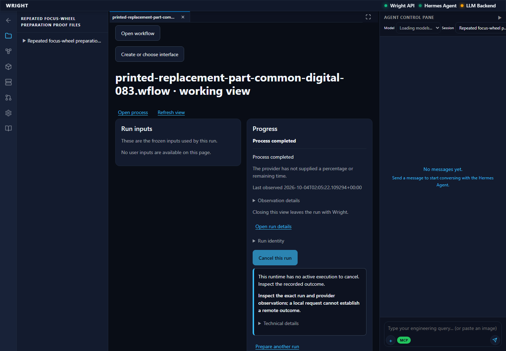
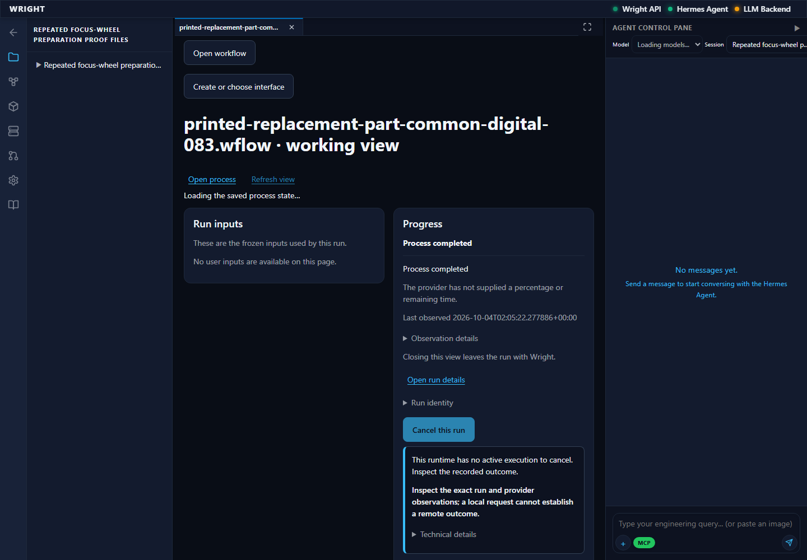
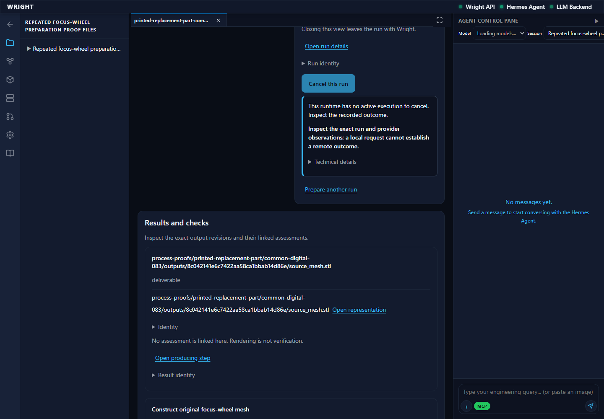
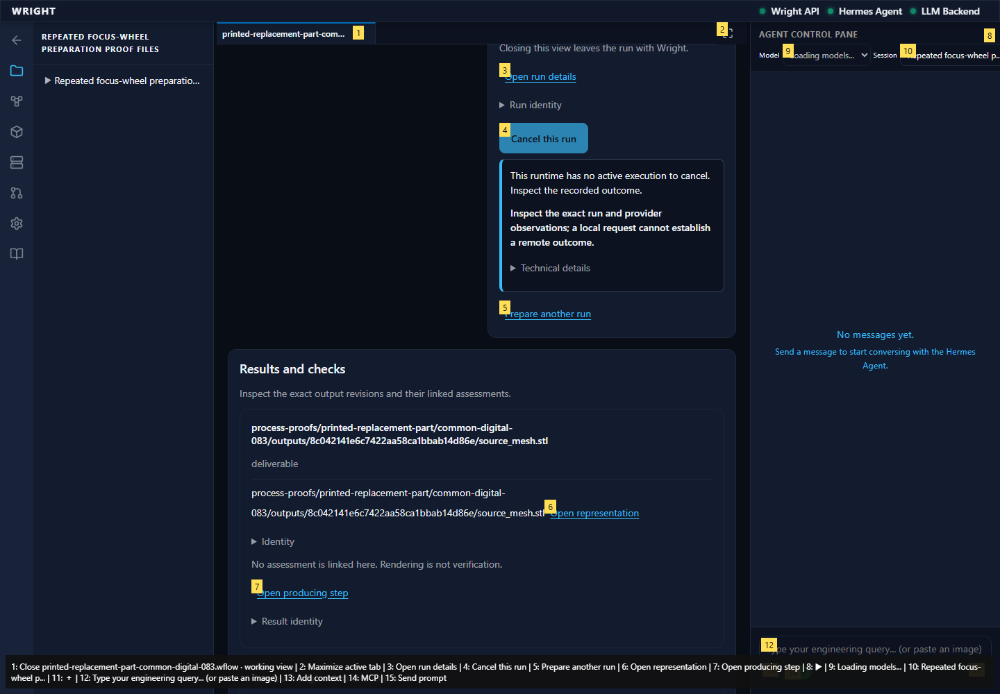
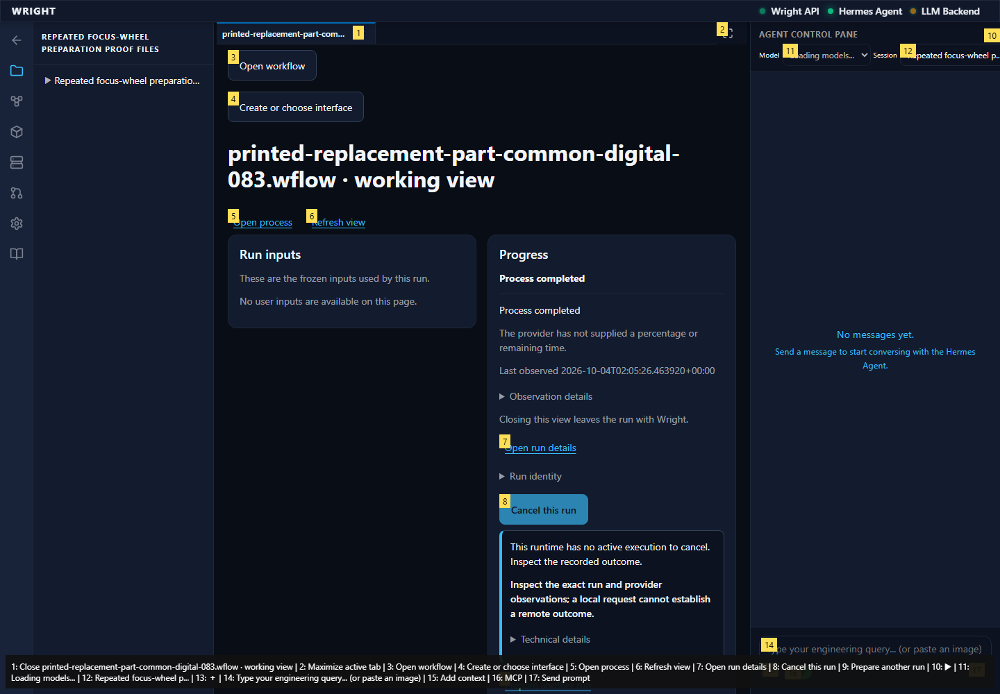

Fresh read-only continuation verifies the one actual common-view-started process completed, its five exact outputs and same-run refresh/reload. The prior label assumption failure is retained. No new execution, generated interface, model, integration policy, review or physical action.
pass
The same common-view-started run has five actual outputs and no generated interface or review. The UI correctly says Process completed.
Expected: Actual common view and backend agree on completion
Actual: The same common-view-started run has five actual outputs and no generated interface or review. The UI correctly says Process completed.

Refresh reads the same completed digital mesh process without starting it again.
Expected: Same completed run and accepted source
Actual: Refresh reads the same completed digital mesh process without starting it again.

Five exact backend-recorded result cards are available. Native geometry remains digital preparation, without manufacturing release or physical acceptance.
Expected: Exact native source STL, repaired STL, preview and native responses
Actual: Five exact backend-recorded result cards are available. Native geometry remains digital preparation, without manufacturing release or physical acceptance.


The exact completed run restores after reload; no generated interface is required.
Expected: The same durable run returns with no new start
Actual: The exact completed run restores after reload; no generated interface is required.
